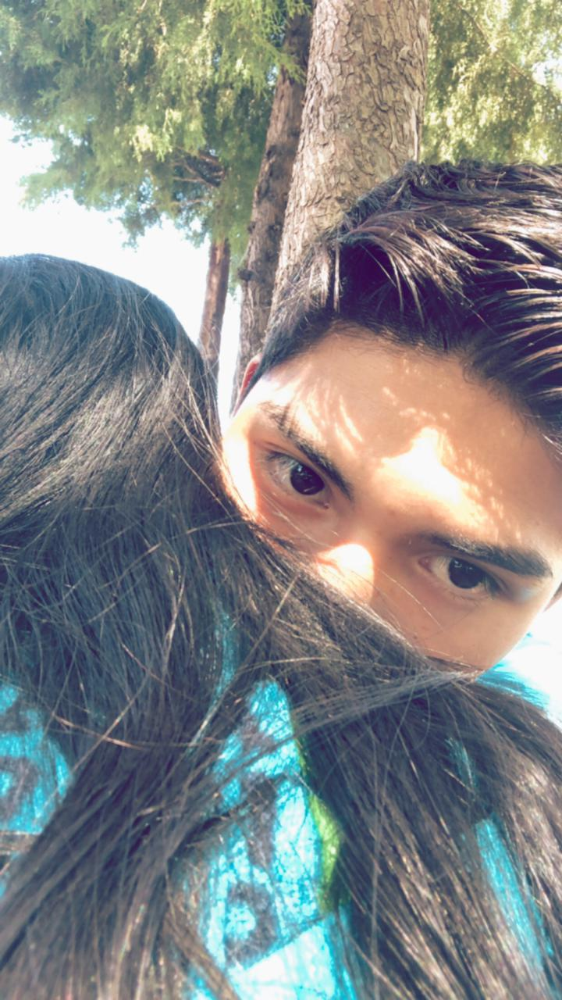
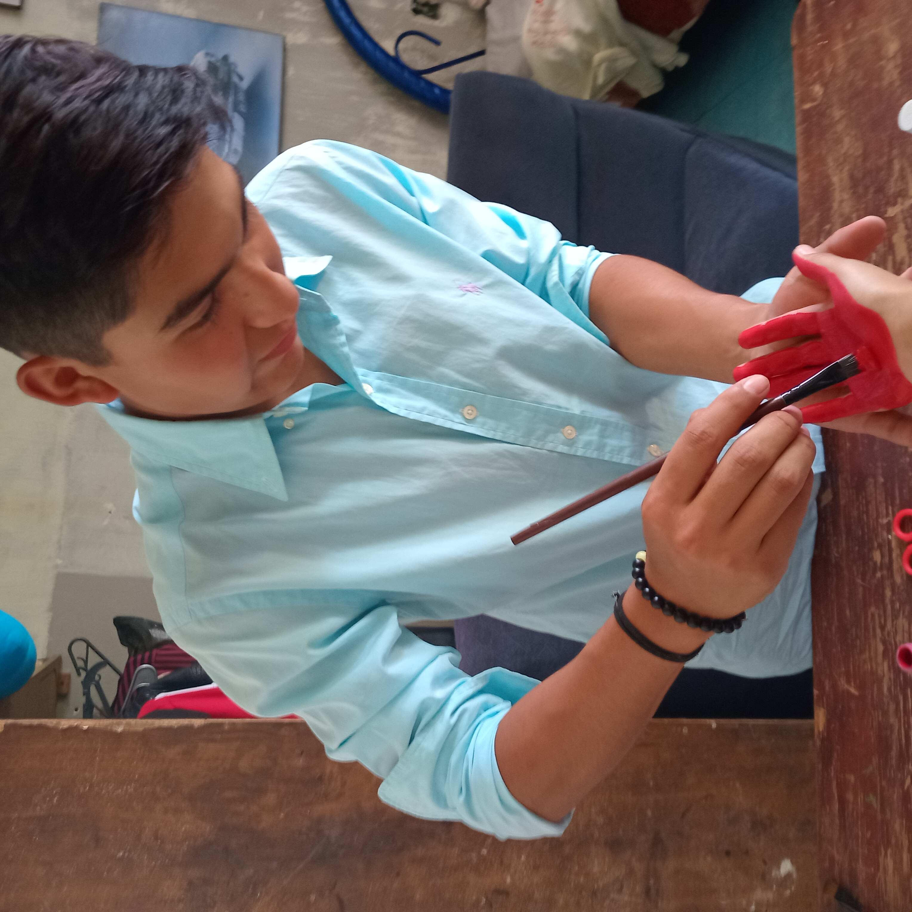
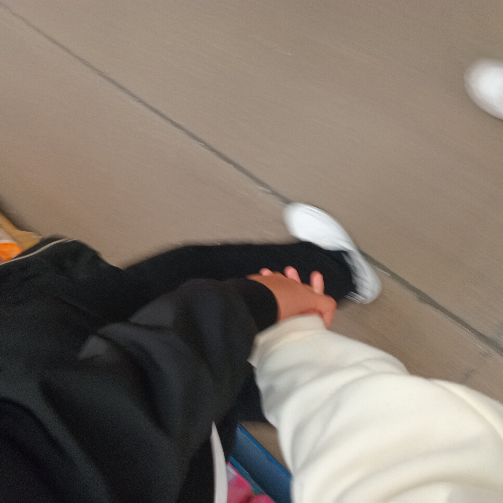
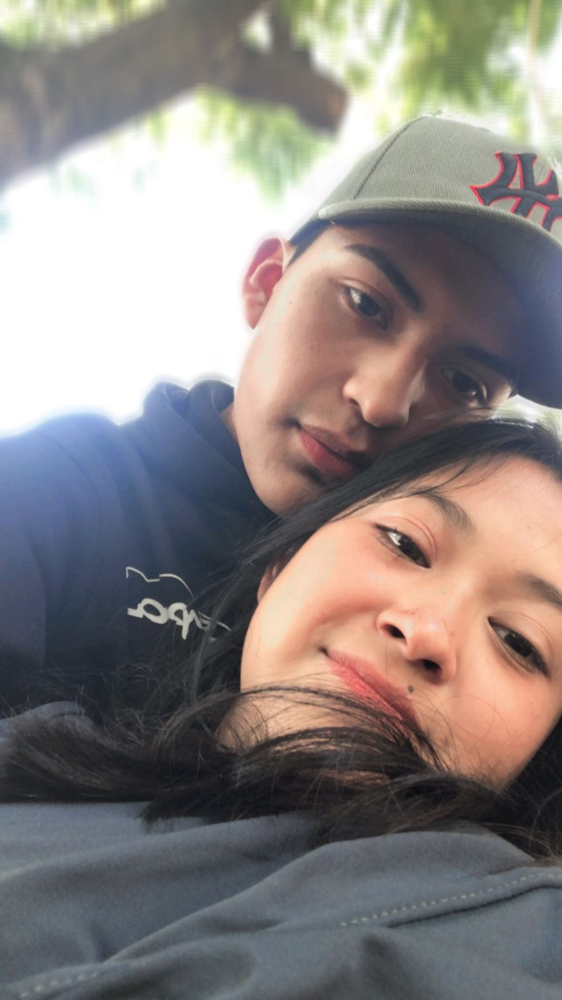

Antes de comenzar a hojear estas páginas, quiero que sepas que cada palabra está escrita pensando en ti, en lo que hemos vivido y en todo lo que nos queda por vivir. Este no es solo un scrapbook, es nuestro pedacito de eternidad. Aquí encontrarás pequeños detalles que quiero guardar para siempre. Cada hoja es un ‘te amo’ disfrazado de colores, fotos y letras, porque a veces lo que siento por ti no cabe en una sola frase. Gracias por ser mi refugio en los días difíciles y mi motivo de alegría en los días más simples. No importa cuánto tiempo pase, siempre quiero que al abrir estas páginas recuerdes que lo mejor de mi vida eres tú.
Con todo mi amor, Say
Cada día, cada minuto y cada segundo me enamoro más de ti. Simplemente eres todo lo que quiero para mi vida. El día de hoy no me imagino sin ti, porque te has convertido en algo esencial, en alguien que ya forma parte de mí. Eres mi felicidad. Sé que no ha sido fácil llegar hasta aquí. Hemos tenido discusiones, momentos en los que estuvimos a nada de decir adiós para siempre… pero incluso en esos instantes supimos que no podíamos soltar lo que hemos construido, porque somos parte uno del otro. Nos hemos completado de maneras que nunca imaginamos. Somos polos opuestos, sí, pero precisamente por eso encajamos: tú me equilibras, yo te sostengo. Mi objetivo es simple pero profundo: hacerte feliz, inspirarte a ser la mejor versión de ti, quererte de la manera correcta y acompañarte en cada meta, en cada sueño, en cada paso de tu camino. Hoy celebramos 365 días juntos… y aunque ha pasado un año, siento que esto apenas comienza. Que nos esperan miles de días más, millones de instantes por vivir, abrazos por dar y recuerdos por crear. Gracias por ser mi refugio, mi alegría y mi razón de sonreír. Gracias por elegirme cada día. Te amo, siempre.
Desde que llegaste a mi vida, todo tiene un brillo distinto. Eres como ese rayito de sol que aparece en medio de un día gris, que calienta el corazón y lo hace sentir en casa. Tú eres esa luz que me guía cuando siento que me pierdo, esa fuerza que me recuerda que la vida vale la pena cuando se comparte con alguien especial. No eres perfecto, y yo tampoco lo soy… pero juntos hemos aprendido a sostenernos, a crecer, a levantarnos incluso cuando la tormenta parecía más fuerte que nosotros. Y aun así, aquí estamos: brillando, porque tu luz y la mía se encontraron. Quiero que sepas que me haces feliz de maneras que nunca imaginé. Que cada sonrisa tuya ilumina rincones de mí que yo misma desconocía. Que eres mi paz y mi impulso, mi refugio y mi aventura. Eres mi rayito de sol. Ese que no se apaga, que me calienta incluso en la distancia y que me recuerda cada día por qué te elijo. Te amo, con la certeza de quien encontró su luz en otro corazón.
Antes de ti, sentía que algo me faltaba, como si dentro de mí hubiera un espacio vacío imposible de llenar. Caminaba, reía, soñaba… pero siempre había un hueco, una ausencia que no sabía nombrar. Entonces llegaste tú. Y todo cobró sentido. Tu mirada encajó con la mía como dos piezas que estaban destinadas a encontrarse. Tu risa se convirtió en la melodía que faltaba en mi canción. Tus abrazos, en el lugar seguro donde mi corazón aprendió a descansar. Eres mi pieza faltante. Esa parte que completó mi historia, que me enseñó que el amor no es depender, sino compartir; no es poseer, sino acompañar; no es buscar la perfección, sino abrazar lo que somos, con nuestras diferencias y nuestras luces. Hoy entiendo que sin ti no estaría incompleta, pero contigo estoy completa de una manera hermosa. No porque me falte algo sin ti, sino porque contigo todo tiene más sentido, más color, más vida. Eres, simplemente, la pieza que hacía falta para que mi rompecabezas se viera completo. Te amo.
Hoy quiero regalarte algo diferente: una lista con solo algunas de las razones por las que eres mi persona favorita en el mundo.
Estas son solo diez razones, pero créeme… la lista es infinita. Te amo.
Tal vez no tengamos un castillo ni un balcón como Romeo y Julieta, pero lo que tenemos es aún más fuerte: un amor real, auténtico, que construimos día a día. Y mientras esa canción suene, yo siempre recordaré que mi lugar está contigo.
Dicen que con el tiempo el amor se vuelve rutina, pero contigo pasa todo lo contrario. Cada día encuentro una nueva razón para enamorarme más de ti:
Lo que me enamora de ti no está en los grandes gestos, sino en esas pequeñas cosas que hacen que mi corazón lata más fuerte.
Si pudiera detener el tiempo, lo haría cada vez que te abrazo. Para guardar tu risa, tu olor, tu calma. Para recordarme siempre que lo mejor de mi vida está aquí, junto a ti. 
Cada GRACIAS es un recordatorio de lo afortunado/a que soy de tenerte en mi vida.
Prometo cuidar estas cosas y recordarnos siempre lo afortunados que somos de tenernos el uno al otro.
Mi amor por ti no es pasajero; es un compromiso con nosotros, con nuestra felicidad y con todo lo que estamos construyendo juntos. Siempre serás mi lugar seguro y mi aventura favorita.
te amo mucho mi Principito ✨